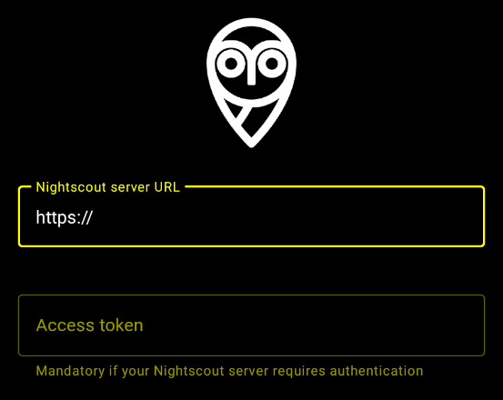
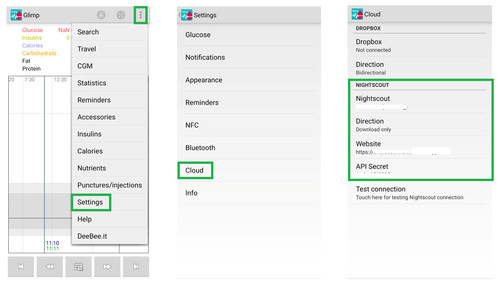
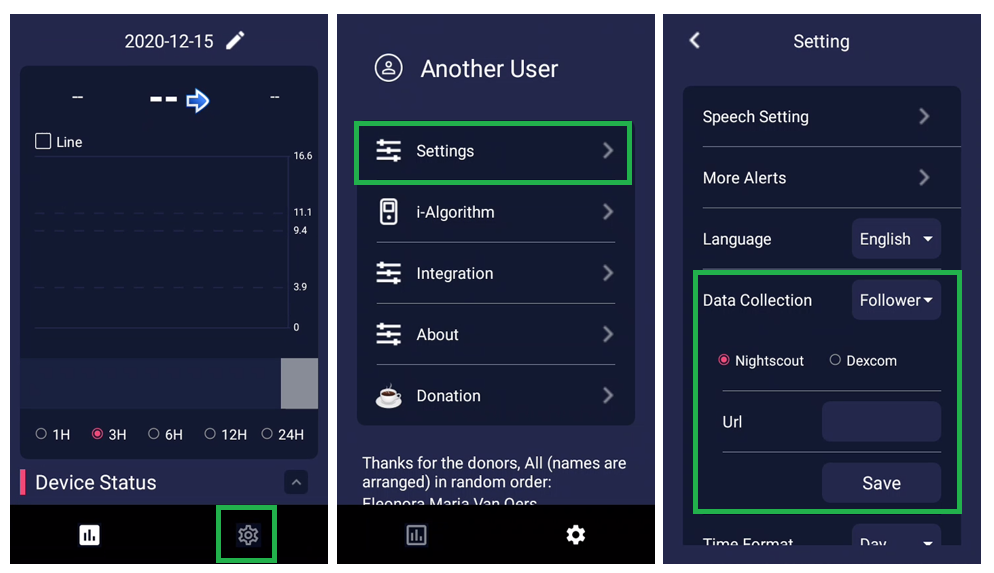
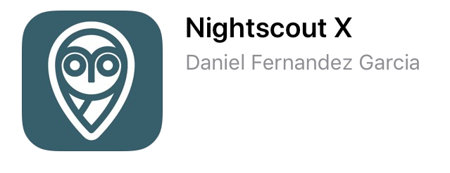
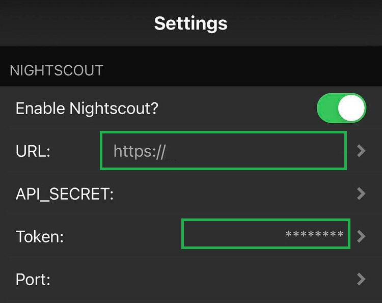
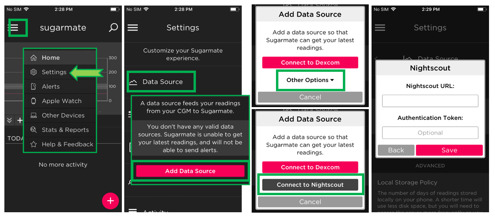
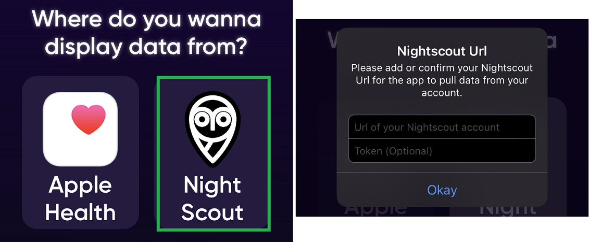
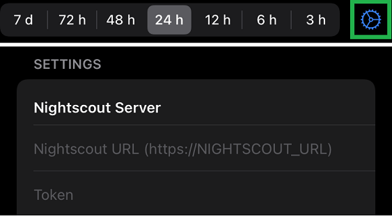
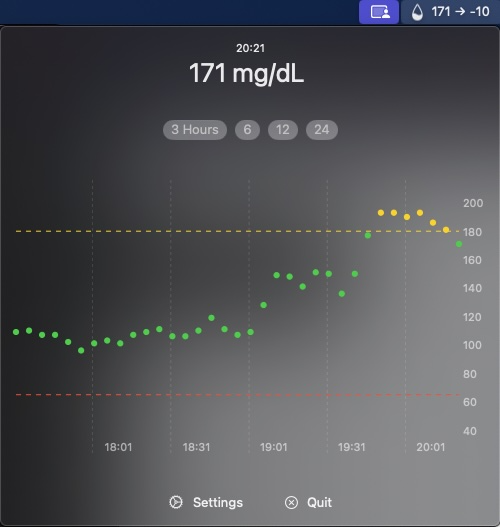

Setup Downloaders - Followers
{kind=link}
Note: indicates applications compliant to Nightscout access tokens.
{kind=link}
Android
xDrip+
{kind=link}
{kind=link}

Select the Nightscout Follower data source and type your Nightscout URL:
Example: https://name.domain.tld
For a secured site add the token and @ before:
Example: https://token@name.domain.tld
{kind=link}
Facebook group xDrip
AAPSClient
Facebook group AndroidAPS Users
GlucoDataHandler
Available in Google Play store.
Receives glucose, IOB and COB values from Nightscout (pebble interface).

GlucoDataAuto for Android Auto.
{kind=link}
Nightwatch (Google Play Store)
Monitor your Nightscout glucose levels on your Android phone or tablet. Dark UI, large readings and buttons, designed for usage at night.
{kind=link}
Nightwatch (legacy)
CGM data on your Android Phone and Android Wear Watch!
Nightwatch is not maintained anymore and might not work with recent Android versions. Switching to xDrip+ is recommended.
Glimp
In Settings, Cloud, Nightscout, select Download only and type your Nightscout URL. Use a token or API_SECRET for a secure site.
{kind=link}
Diabox
{kind=link}
In Settings, set Data Collection to Follower, select Nightscout and type your Nightscout URL.
{kind=link}
iOS
Nightscout X
{kind=link}
Nightguard

Nightscouter
Loop Follow
Spike

Look here.
xDrip4iOS
Set xDrip4iOS to follower mode and enable Nightscout, type your Nightscout URL. If you’re using a secured Nightscout site, enter your token in the matching field.
{kind=link}
Facebook group xDrip4iOS
sugarmate
Important limitation
Sugarmate doesn’t allow Nightscout as a data source if you included bridge in ENABLE.
If you need this data source: enable obscuration variables.
{kind=link}
Add Nightscout as a data source, type your Nightscout URL.
{kind=link}
Diabetes Cockpit
{kind=link}
Gluco-Tracker
{kind=link}
BitBar Nightscout
Mac
{kind=link}
GlucoseBar
Show your current BG in the menu bar and a nice chart for your historic data. Also available on the Apple App Store.
{kind=link}
Windows
FloatingGlucose (archived)

Owlet

NS2Win

Displays
M5Stack NightscoutMon
Facebook group M5STACK NIGHTSCOUT

M5Stick NightscoutMon

BGBuddy

SugarPiDisplay